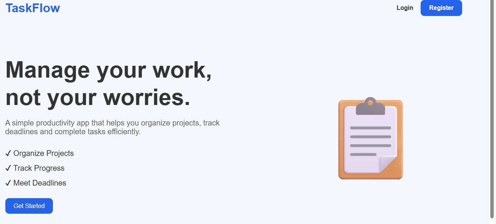
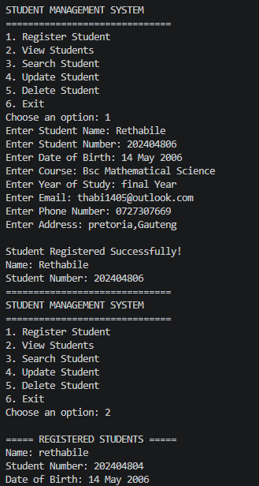
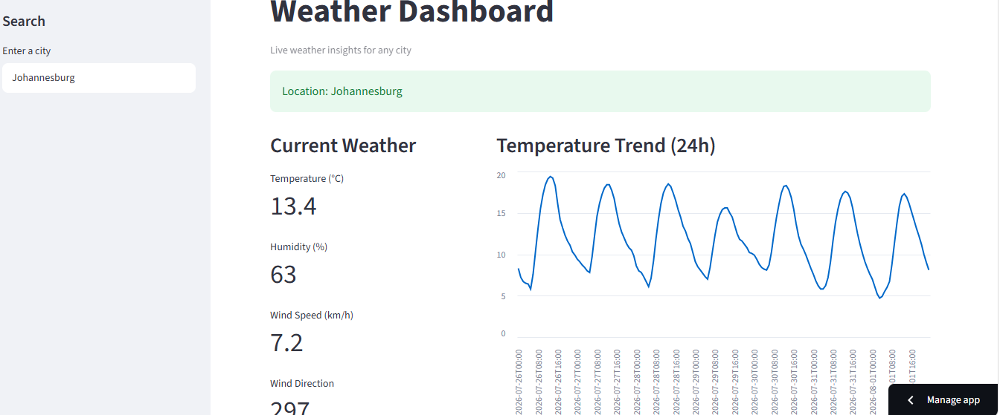
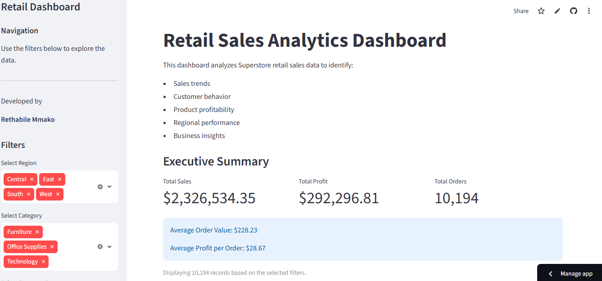

Aspiring Software Developer and Data Analyst passionate about building practical software solutions and using data to solve real-world problems.
I'm a final-year Bachelor of Science in Mathematical Sciences student, majoring in Computer Science and Statistics at Sefako Makgatho Health Sciences University. I enjoy building software that solves real-world problems and analysing data to uncover useful insights. Through personal projects, I have strengthened my skills in web development, Python programming, databases, data analysis and problem solving. I am currently looking for graduate opportunities where I can learn, contribute and grow into a professional Software Developer or Data Analyst.
Python
Java
HTML5
CSS3
JavaScript
Flask
SQLite
Git
GitHub
VS Code

Students and professionals often struggle to keep track of tasks, deadlines and completed work.
Python - Built the application's functionality.
Flask - Created the web application and handled routing.
SQLite - Stored users and tasks.
HTML - Built the webpage structure.
CSS - Styled the application.
Git - Tracked project changes.
GitHub - Stored the project online.
Render - Deployed the application.
Developed a secure task management web application with user authentication, task creation, editing, completion tracking and task deletion.

Managing student records manually can become slow, repetitive and prone to errors.
Java - Built the entire application.
Object-Oriented Programming (OOP) - Organised the program into classes and objects.
VS Code - Wrote and tested the code.
Git - Tracked project changes.
GitHub - Stored the project online.
Developed a console application that allows users to register, search, update and delete student records.

People often need quick access to current weather information without searching multiple websites.
HTML - Built the webpage structure.
CSS - Styled the dashboard.
JavaScript - Added interactivity and fetched weather data.
Weather API - Retrieved real-time weather information.
Git - Tracked project changes.
GitHub - Stored the project online.
Built a responsive weather dashboard that displays real-time weather information for any searched city.

Retail businesses generate large amounts of sales data that is difficult to interpret without proper analysis.
Python - Analysed the sales data.
Pandas - Cleaned and organised the dataset.
NumPy - Performed numerical calculations.
Matplotlib - Created charts and visualisations.
Jupyter Notebook - Performed and documented the analysis.
Git - Tracked project changes.
GitHub - Stored the project online.
Analysed retail sales data to identify sales trends and generate useful business insights through data visualisation.
I'm currently looking for graduate opportunities in Software Development, Data Analysis and Data Science. Feel free to reach out!